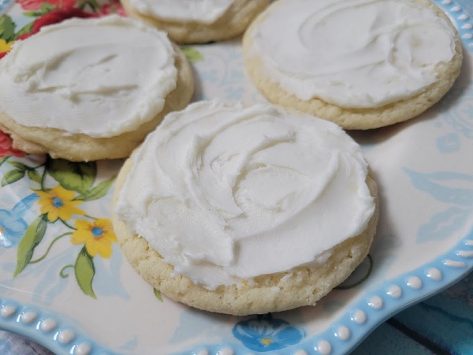

Buttercream-frosted Lemon Sugar Cookies

Description
Super tender and chewy lemon-infused sugar cookies with an optional sweet lemony buttercream frosting are a beautiful bright treat to enjoy (and maybe even share!) I like to make a half recipe of the frosting, and keep about half of the cookies unfrosted, since not everyone always wants the extra sweetness!
Ingredients
Cookies:
- 1.25 cups white sugar
- 1 cup unsalted butter, softened to room temperature
- 3 large egg yolks
- 2.5 cups all-purpose flour
- 1 teaspoon baking soda
- 0.5 teaspoon cream of tartar
- 1 mdeium lemon, zested and juiced
Frosting:
- 3 cups confectioner's sugar
- 0.5 cup unsalted butter, softened to room temperature
- 2 tablespoons lemon juice
- 1 tablespoon milk, or more as needed
Steps
- Preheat the oven to 350 degrees F (175 degrees C). Line a baking tray with a silicone baking mat (such as Silpat®) or parchment paper.
- Cream sugar and 1 cup butter together in a bowl with an electric mixer on high until light and fluffy, about 2 minutes. Add in egg yolks, 1 at a time, until well incorporated and fluffy; don't overmix. Blend in all of the zest from the lemon and 3 tablespoons of lemon juice (if you have extra juice, reserve it for the frosting).
- Combine flour, baking soda, and cream of tartar in a bowl and whisk to blend. Slowly add the dry ingredients to the mixing bowl with the butter-sugar mixture and mix in on low speed until just combined. Scrape down the sides and bottom with a spatula until cookie dough is evenly blended.
- Use a 1 1/2-tablespoon cookie scoop to scoop out 12 dough balls and set, evenly spaced, onto the prepared baking sheet. Don't flatten them, you can leave them just as they come out of the scoop. If you don't have a scoop, just shape walnut-sized balls by hand.
- Bake in the preheated oven until bottoms are very lightly browned and tops begin to appear crackled, 10 to 11 minutes. Cool on the baking sheet for 2 to 3 minutes and then very carefully move to a cooling rack to complete cooling (they will be very soft still).
- Repeat with remaining dough until all cookies are baked and cooled.
- When cookies are cooled, make the buttercream frosting by whipping 3 cups of confectioners' sugar with 1/2 cup butter; start on low speed until butter and sugar begin to combine, then turn up the speed slowly. When sugar and butter are mostly combined, add in lemon juice and whip until creamy and smooth. Check consistency and flavor; you can add a little extra lemon juice or milk if you want a creamier consistency. But if you want the texture fairly stiff you may not need extra liquid at this point.
- Frost the cooled cookies as desired and allow the buttercream to set before stacking or storing the cookies.